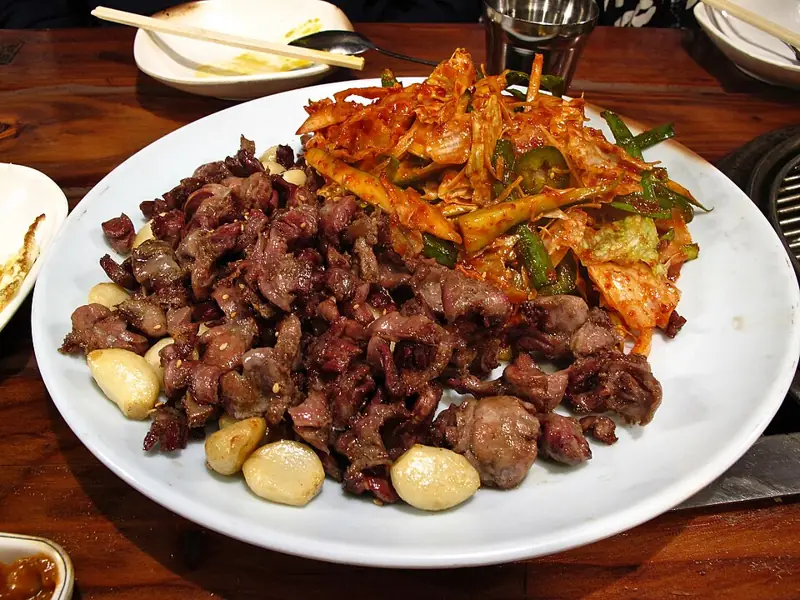

Фото: Chun Yip So, CC BY 2.0

Куриные желудки тушёные
Мягкие куриные желудки с луком и морковью в сметанном соусе
100 мин4 порц.406 ккал на порциюБ 44 · Ж 25 · У 8Русская кухня
Продукты на 4 порц.
- Куриные желудки800 г
- Лук репчатый1,5 шт
- Морковь1 шт
- Сметана 20%6 ст. л.
- Вода500 мл
- Лавровый лист2 шт
- Соль1,5 ч. л.
- Перец чёрный молотый2 щеп.
- Растительное масло1,5 ст. л.
Как готовить
- Промойте желудки, срежьте остатки жёлтой плёнки и жира, крупные разрежьте пополам.
- Обжарьте на масле на сильном огне 5-7 минут, пока не уйдёт жидкость.
- Добавьте нарезанный лук и тёртую морковь, жарьте ещё 5 минут на среднем огне.
- Влейте горячую воду, добавьте лавровый лист и тушите под крышкой на слабом огне 60 минут.
- Добавьте сметану, соль и перец, тушите ещё 15 минут. Желудки готовы, когда нож входит легко.
Совет. Жёлтая плёнка горчит, её нужно обязательно снять. Если желудки ещё жёсткие, тушите дольше, переварить их почти невозможно.